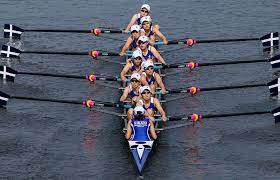

The official website of World Rowing, the international rowing federation. News, live coverage, biographies, calendar, videos, photos, & more

The Association of National Olympic Committees (ANOC) and the Indonesia National Olympic Committee (Indonesia NOC) announced the full sports programme for the ANOC World Beach Games Bali 2023, in celebration of one year to go to the unique festival of beach and water sports.